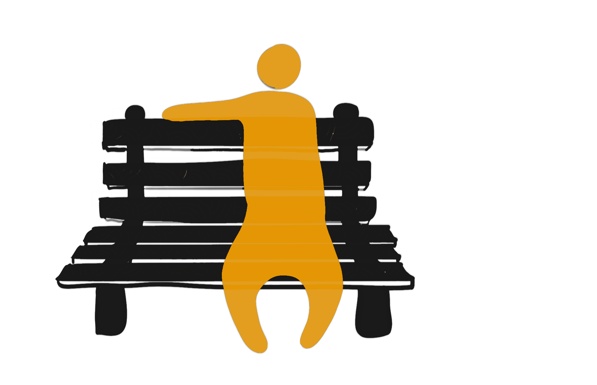

2022 Thesis Project
Encounter is a public installation of two redesigned interactive park benches, which aims to stimulate unexpected, playful interactions between strangers in public space. It creates interactive experiences and lighting effects by detecting movement of passers-by and sitters.
Through a reconsideration of ubiquitous public furniture - the park bench - this project demonstrates innovative approaches of experimenting with design to form interactive urban spaces.
See benches in public space around the world (images credit to Unsplash)
Web Developer, Creative Technologist, & Designer
I graduated from Parsons School of Design with MFA Design and Technology degree. I fall in love with coding my first year at Parsons. I am interested in using code to solve problems.
Influenced by my background in Landscape Architecture, I am passionate about collaborating with others to create exciting and accessible user experience.